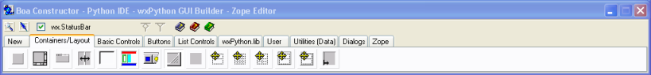
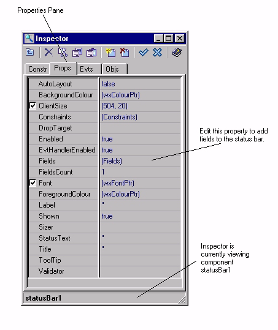
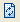
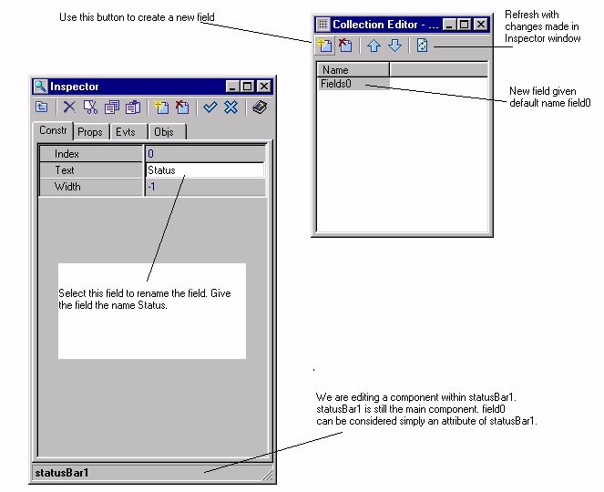

|

|

|

|
Getting Started Guide for Boa Constructor
|

|

|
|
Next:Add a
Menu Bar Up:Getting Started Guide for
Boa Constructor Previous:Using the
Designer to Set the Title
2.3 Add a Status Bar
The first component we will add to the application will be a
status bar. A status bar is used to give information about a program
when it runs. We will use the status bar to indicate to the user what
is happening when slow actions occur, to give simple help messages or
other information you might want to show.
- Select the Frame1 tab in the
Editor to ensure that we are editing the Frame.
- Start the Designer, by clicking
the designer button from the Editor toolbar.

- The Frame will be displayed as a
drawing area.
- On the Palette select the tab
called 'Containers/Layout'. This tab contains entries for components
which are used with frames, the status bar is one of these.
- Move the mouse over the buttons.
Balloon help should show, one of these buttons represents the
wx.StatusBar control. This is the control we want. Select this
button using the mouse.
- The button should change shading to indicate that it is
pressed. The Palette contains a checkbox to show the currently
selected component type. This should reflect wx.StatusBar.

- Now move the mouse cursor over the
drawing frame. Press the mouse left button in the drawing area. This
will create a status bar in the frame.
- The status line within the
Inspector will display on the left the name of the current widget
'statusBar1', and on the right it shows which wxWidget class it is
derived from, in this case 'wx.StatusBar' .
- In the Inspector select the
'Properties' pane. This pane is used to configure the properties of
our status bar.
- Click to edit the value of 'Fields'. The field will show a
button with '+++'. Click the button. This opens the 'Collection
Editor'.

- The Collection Editor is a tool,
which is used to add multiple sub-components to components where
required. We will add one field to the status bar, however you could
add multiple fields.
- Press the 'New' button
 on
the Collection Editor. This creates a new field within the status
bar. This becomes the current field in the Inspector.
on
the Collection Editor. This creates a new field within the status
bar. This becomes the current field in the Inspector.
- Edit the field Text. Set the name
from 'Fields0' to 'status'.
- The Collection Editor toolbar contains a 'Refresh' button
.
Press this button to see the Inspector change in the Collection
Editor window.

- Close the Collection Editor
window. Select the Designer window. Click the mouse anywhere in the
drawing area to make the frame (Frame1) the current component.
- Select the properties pane in the
Inspector.
- Edit the property 'StatusBar'. The drop down menu will show
our new status bar. Select the status bar, this is necessary so that
the frame can manage the status bar, i.e. it's possition at the
bottom of the screen and it's size.

- Update the source code with the
changes using either Post button
 .
.
- Save the source code changes using the Save button on the
Editor toolbar.
|
|
|
|
Getting Started Guide for Boa Constructor
|
|
|
|
Next:Add a
Menu Bar Up:Getting Started Guide for
Boa Constructor Previous:Using the
Designer to Set the Title